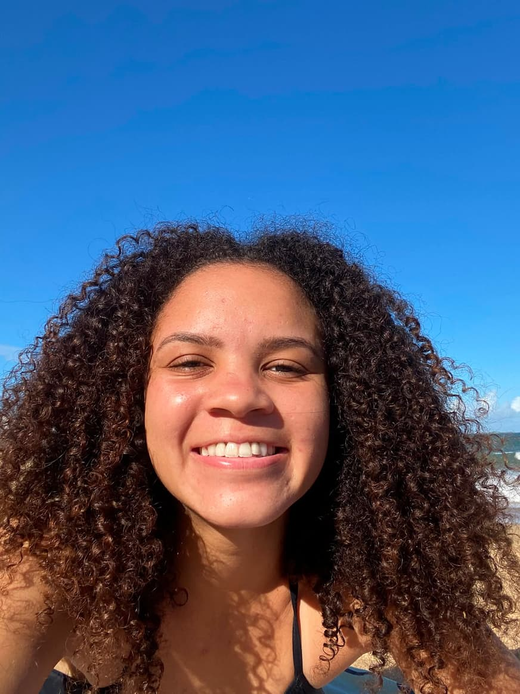

Leticia Santana
About Me
My name is Letícia and I'm 22 years old. I live in Espírito Santo, Brazil. I love the beach. I come from a family of 7, with 2 older brothers and 2 younger sisters. I served a full-time mission in Cape Verde from June 2023 to October 2024. And now it's been almost a year since I got married. I'm studying programming because I know it can give me independence in the future and work flexibility after I have kids. Currently, I work in a jewelry factory as a saleswoman.

Vitória, Espirito Santo
Espírito Santo is one of the four states in the Southeast Region of Brazil. With long-standing settlement, it stands out for its extractive industry and coffee production.